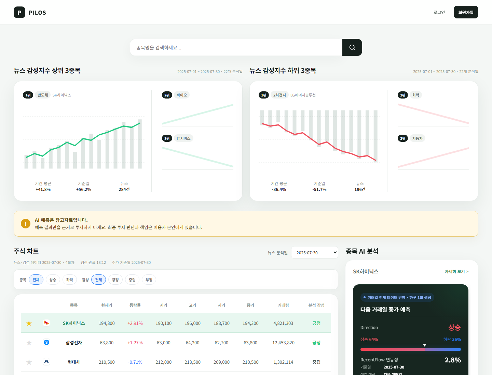
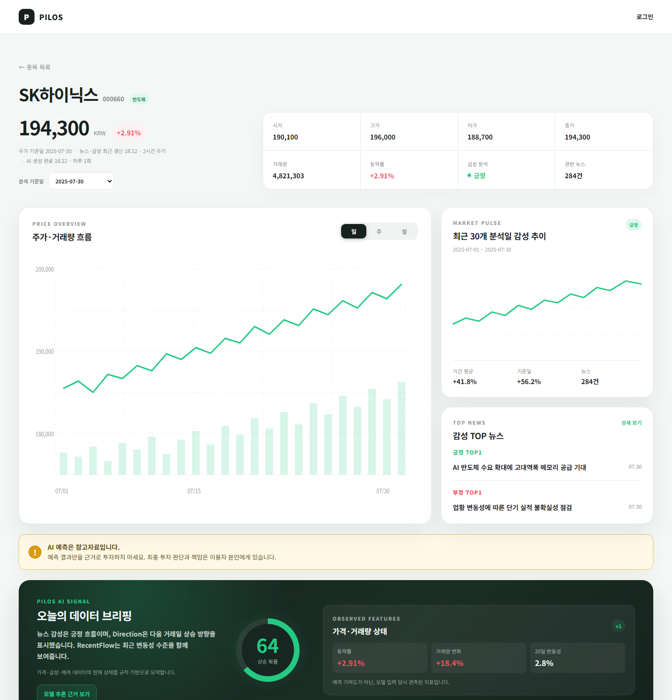

Project Case Study
Project 02
PILOS Stock Advisor
뉴스·주가 데이터를 수집하고 AI 분석 결과를 공용 DB에 적재해 Flask 서비스까지 연결한 KDT 1차 팀 프로젝트입니다.
Overview
분리된 데이터·AI 기능을 하나의 사용자 서비스 흐름으로 연결했습니다
뉴스와 주가 데이터를 수집하고, 뉴스 요약·감성분석과 주가 관련 모델 결과를 MySQL에 적재한 뒤 Flask 대시보드에서 제공한 4인 팀 프로젝트입니다.
개별 모델을 모두 직접 만든 프로젝트가 아닙니다. 저는 금융 뉴스 감성분석과 Flask Backend를 담당하고, 팀원이 만든 요약·예측 기능을 공통 DB와 실행 순서에 맞춰 서비스 파이프라인으로 통합했습니다.
My Contribution
직접 구현한 영역과 통합한 팀 기능을 구분했습니다
개별 기능 구현뿐 아니라 AI Pipeline과 Web이 공용 DB를 통해 연결되도록 입력·출력과 실행 흐름을 맞췄습니다.
직접 구현·리팩터링
- 금융 뉴스 감성분석KR-FinBERT 기반 분석 결과를 데이터 흐름에 연결
- Flask BackendRoute·Service·Repository와 DB 조회 흐름 구현
- DB 연동공용 데이터 구조를 기준으로 AI 결과와 화면 연결
- 크롤링 구조 공통화테마별 중복 흐름을 공통 설정과 runner로 통합
- 자동 실행 통합독립 Job의 실행 순서·실패 경계·상태 기록 연결
- Linux 실행서버에서 정해진 주기로 데이터 처리 흐름 실행
How It Works · Service Flow
AI와 Web은 HTTP가 아니라 공용 MySQL을 기준으로 연결됐습니다
뉴스·주가 수집 → 요약·군집 → 감성분석 → 예측 결과 생성
데이터와 분석 결과의 공용 전달 경계
Repository·Service 조회 → 대시보드와 종목 상세 화면 제공
두 저장소가 서로 API를 호출한 것이 아니라, 각자의 책임을 유지한 채 공용 DB를 통해 데이터를 주고받았습니다.
How It Works · Service Features
수집·분석 결과를 대시보드와 종목 상세 화면에서 확인할 수 있었습니다
프로젝트의 전체 기능을 나열하기보다 사용자가 실제 서비스에서 확인할 수 있었던 대표 기능만 정리했습니다.
- 01
종목 대시보드
100개 종목의 가격·등락·거래량과 감성 정보를 한 화면에서 조회
- 02
테마 감성
테마별 뉴스의 긍정·부정 감성 차이와 흐름을 차트로 확인
- 03
종목 상세
종목 검색 후 가격·거래량 차트, 감성 추이와 대표 뉴스를 함께 확인
- 04
AI 분석 카드
감성 결과와 Direction 상승·하락, RecentFlow 변동성·주목도 결과 제공
- 05
분석 기준일
뉴스 분석일을 선택하고 뉴스·감성 기준일과 주가·예측 기준을 구분해 조회
Service Screens
서비스의 전체 흐름을 보여줄 화면 영역


프로젝트 최종 UI를 기반으로 서버 의존성을 제거하고 정적 데이터로 재현한 화면입니다.
Development Challenges
서비스에서 드러난 성능과 데이터 완성도 문제를 추적했습니다
Backend / SQL
조회 범위와 중복 호출을 줄여 API 응답을 개선
11.775초 → 0.256초 동일 DB · 로컬 Flask test client ·/api/stockTable
- 문제
최근 90일 약 17만 행을 대상으로 넓은 중간 결과를 정렬하고, 동일 전체 조회를 반복했습니다.
- 확인
한 종목만 필요한 AI 카드도 전체 종목을 조회한 뒤 Python에서 필터링했습니다.
- 변경
최신 분석일과 종목을 SQL에서 먼저 좁히고, 불필요한 컬럼과 중복 조회를 제거했습니다.
- 구조
Route에 모여 있던 일부 데이터 조회 책임을 Service와 Repository로 이동했습니다.
- 대표뉴스 100종목
5.242초0.321초- 메인 /
6.447초0.588초- /api/stockTable
11.775초0.256초
동일한 로컬 측정 조건의 결과이며 모든 환경에서 동일한 개선 배수를 보장한다는 의미는 아닙니다.
Data / Service Reliability
부분 완료된 DB 상태가 사용자 화면 장애로 번지지 않도록 방어
- 상태
선행 저장 후 외부 감성분석 API가 실패하면 일부 분석 필드가 비어 있는 row가 남을 수 있었습니다.
- 판단
전체 파이프라인 트랜잭션을 다시 설계하기보다 서비스 제공 경계에서 완성도를 검증했습니다.
- 구현
필수 감성값이 모두 존재해야 완성된 결과로 인정하고, 하나라도
None이면 결과 없음으로 처리했습니다. - 방어
데이터 부재와 정상적인 0을 구분하고 예측·뉴스 카드도 데이터 없음 상태를 정상 처리했습니다.
트랜잭션 문제를 완전히 제거한 것이 아니라, 발생 가능한 중간 상태를 서비스 계층에서 안전하게 다룬 경험입니다.
Technical Deep Dive · Refactoring & Data Flow
반복 코드를 공통화하고 영속 DB를 처리 이력의 기준으로 바꿨습니다
20개 테마 중복 구조
한 테마에서 공통 구조를 검증한 뒤 전체 테마로 확대
테마별로 복제된 뉴스 API·원문 수집·전처리 코드를 공통 설정과 runner로 통합했습니다.
- 공통
THEMES설정과 실행기 - 뉴스 API·원문 crawler·전처리 공통화
- 테마별 실패를 다른 테마 실행과 격리
- 병렬 실행의 테마별 process 상태 분리
처리 상태 Source of Truth
runtime CSV가 아니라 DB에서 기존 처리 상태를 일괄 확인
실행 파일이 정리돼도 이미 처리한 기사를 다시 수집하지 않도록 (stock_code, url_hash)를 영속 기준으로 사용했습니다.
- 본문 + sentences_json
- 처리 생략
- 본문만 존재
- HTTP 요청 없이 DB 본문 재사용
- 신규 / 본문 없음
- 원문 크롤링
여러 key를 batch 조회해 파일이 아닌 DB를 처리 이력의 기준으로 유지했습니다.
Automation & Reliability
독립된 Job을 실패 경계가 있는 하나의 실행 흐름으로 연결했습니다
CI/CD가 아니라 Linux 서버에서 정해진 실행 주기로 데이터 처리 파이프라인을 자동 실행한 경험입니다.
- 수집
- 요약
- 그룹화
- 감성
- Features
- Direction / RecentFlow
stage별 별도 실행과 return code 확인, 실패 시 downstream 중단
단계별 로그·소요시간과 전체 실행 상태를 pipeline_run에 기록
실행 시작 시 data_date와 execution slot을 고정
2026-07-15~16 Linux 통합 실행 로그 7건에서 최종 PIPELINE SUCCESS가 기록됐습니다.
Result & Limitations
짧은 교육 프로젝트 안에서 서비스 통합 문제를 직접 경험했습니다
남긴 결과
- AI Pipeline → Shared MySQL → Flask Web의 전체 데이터 흐름 통합
- 실제 요청과 SQL을 기준으로 조회 구조 개선
- 부분 완료 데이터와 데이터 없음 상태의 서비스 방어
- 반복 수집 코드와 자동 실행 흐름 정리
명확한 한계
- 약 3주 2일의 KDT 팀 프로젝트
- 운영 수준 CI/CD·모니터링 환경까지는 구성하지 못함
- 실제 금융 투자 서비스가 아니며 모델 결과는 참고 정보
WSGI 기반 Web 배포와 health check·metrics 같은 운영 환경은 별도로 구성하지 않았습니다. 모델 성능과 서비스 실행 성공은 서로 다른 평가 대상입니다.
Retrospective
기능을 연결한 뒤 발생한 문제를 다음 프로젝트의 설계 기준으로 가져갔습니다
첫 프로젝트에서는 기능을 먼저 연결한 뒤 성능, 부분 완료 데이터, 중복 코드와 실행 순서 문제를 발견하고 해결했습니다. 이 과정에서 개별 기능이 동작하는 것과 서비스가 안정적으로 결과를 제공하는 것은 다른 문제라는 점을 배웠습니다.
다음 PILOS Sentiment Index에서는 이 경험을 바탕으로 데이터 계약, 실패 경계, 모델 검증, 사용자 결과의 의미와 LLM의 책임 범위를 더 먼저 정의하려고 노력했습니다.
PILOS Sentiment Index Case Study 보기 →